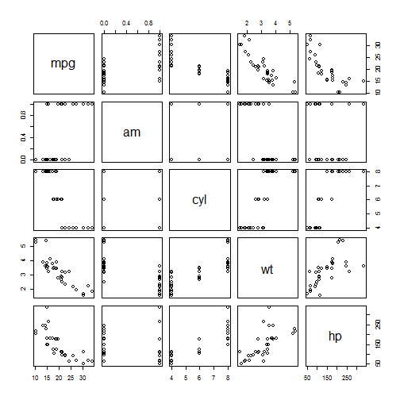

- Complex Topic : Difficult to Learn
- Difficult to assess the impact of adding new dependent variables.
- Solution is to provide an interactive learning APP to PLUG and PLAY the variables
- Use Simple Dataset
Muhammad Owais Masood
data(mtcars) ; head(mtcars,2)
## mpg cyl disp hp drat wt qsec vs am gear carb
## Mazda RX4 21 6 160 110 3.9 2.620 16.46 0 1 4 4
## Mazda RX4 Wag 21 6 160 110 3.9 2.875 17.02 0 1 4 4
